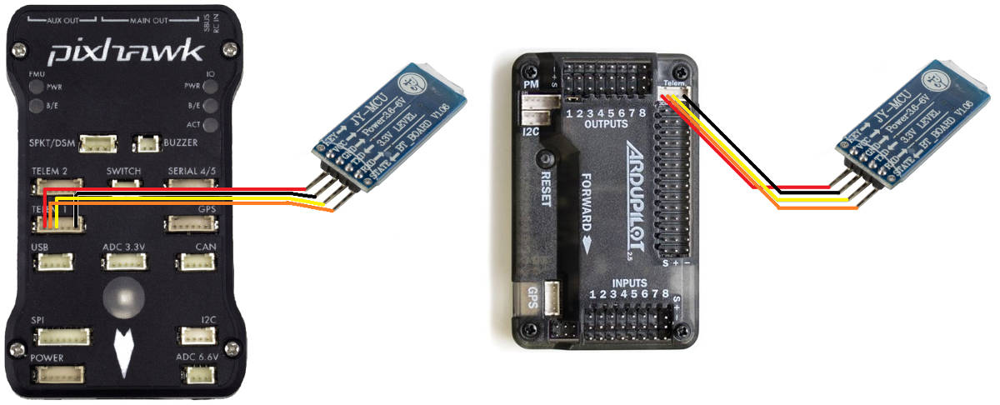
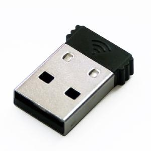
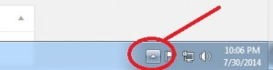
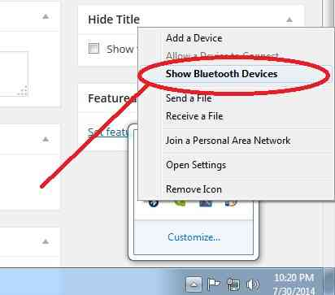

[copywiki destination=”plane,copter,rover,blimp”]¶
Bluetooth Telemetry radio¶
` A Bluetooth Data Link , such as an HC-06 module can be used to connect your Pixhawk (or other controller) to your Bluetooth enabled PC or Android Ground station at distances up to 50m.
{kind=link}
Connecting to the Autopilot¶
The Bluetooth data link comes with both a DF13 6 pin and 6-to-5 pin connector which make it easy to connect to the Pixhawk Telem1 or APM2.x’s Telem ports. Note that for the Pixhawk, although Telem1 is the recommendation, Telem2 or even Serial 4/5 will work.
{kind=link}
Once you have connected the Bluetooth data link you can power up the board. It is OK to use USB connected power while using the Bluetooth module connected to the autopilot as the USB connection can supply enough power BUT YOU MUST USE A WALL WART with Micro or Mini USB).
Bluetooth data link’s LEDs:
Red LED blinks at 1hz : device is working, not connected
Red LED blinks at 0.5z : pairing
Red LED solid : connected
Quick Start connecting with Mission Planner¶
If you are familiar with Bluetooth, search for Bluetooth Device HC-05 or 6 (some may have Linvor as well) , Pair with device (code 1234 or 0000) check it’s properties and look at the services tab. Make sure SPP com port box is checked (only there if your Bluetooth device is active) Look in Device Manager (Windows) and make sure there is a Com Port for the Bluetooth and in the com port properties set the baud rate to 57600 (note the Com Port number).
Note
For use with Mission Planner on the Configure/Tuning tab make sure and UNCHECK the box Reset on USB Connect:

The default Baud Rate for the Bluetooth Module is 57600 (most other modules are 9600) Be sure when you connect it is at 57600 and for the new Com Port you saw in Device Manager.
When you power up the PixHawk or APM with the Bluetooth the module will flash at 1hz the red LED when not connected. When Paring it will flash at .5 Hz and when connected it will be steady on.
And you’re done! You can now use your Bluetooth telemetry for up to about 50m range. (your range may vary depending on back ground noise and conditions in your area)
If you have problems connecting or you don’t know Bluetooth very well or you want to change the default Baud Rate or Device Name, read on for the step by step process.
Detailed connecting with Mission Planner¶
{kind=link}
Many PCs and Laptops have bluetooth adapters built in but if not then you can use a generic USB Bluetooth dongle (pic above) or use an additional Bluetooth data link connected via an FTDI Cable.
After first making sure your autopilot is powered on, and your PC’s bluetooth dongle is plugged in and installed, click on the Windows task bar’s little up triangle (aka “show hidden icons”) which should be on the bottom right of the screen.
{kind=link}
The “hidden icons box” should appear. Right-mouse-button-click on the BlueTooth icon and select “show Bluetooth devices”
{kind=link}
{kind=link}
Windows should bring up the devices box. Any devices you may already have connected by Bluetooth will be in this box. If you have not connected any BT devices before this box will be empty. Select “Add a device”.

Windows will search for BT devices for you. If you have any BT devices turned on they will show up here (like perhaps your cell phone) ignore any other devices and select the HC-05 or HC-06 (or Linvor) .

Select Paring using device code.

Enter the device code (1234 or 0000) this is the default code.
{kind=link}
Once paired right click the device and select “properties” The check box for Comm Port SPP should be checked (also note the com port number).
{kind=link}
In device manager select Com Ports
Choose the comm port you noted in the above step.
Right click and select “properties”
Change baud rate to 57600
Once again start Mission Planner and go to the Configure/Tuning tab and make sure you UNCHECK the box “Reset on USB connect”
Your Bluetooth device should now be ready and you can connect to the proper port at the proper baud rate of 57600 (red LED steady on and not flashing)
Connecting From your Android ground station¶
These instructions will show you how to connect to your vehicle from AndroPilot or DroidPlanner 2 running on NExus 7 tablet using the Bluetooth module.
Open the Android device’s settings application and turn Bluetooth connectivity ON (usually by sliding a slider to the right). In the same settings screen click on “Bluetooth” which should cause a list of AVAILABLE DEVICES to appear
Power the vehicle and the “HC-06” device should appear. Click on it and enter “1234” or “0000” as the PIN to pair with the device, then select OK.
The device will appear under “PAIRED DEVICES”
If using DroidPlanner:
open the Droid Planner settings, and select Telemetry Connection Type, Bluetooth.
In the main DroidPlanner interface, select Connect, and select the paired Bluetooth device.
If using AndroPilot:
a “bluetooth” button should appear on the screen, click it
When live data appears on the screen, you’re ready to start mission planning.
How to Change Baud Rate, Device Name and Device PIN¶
You will need a FTDI to USB cable to change any of the configurations of the device (not supplied) It is not necessary to change anything in order for your BT device to function properly it will function quite well as supplied. This is for reference and your convenience only!
To change the above you need a “Terminal” emulator program. You can not use “Putty” (a popular serial port tool) because it will not accept “line” commands. The Bluetooth Modules read the input at a rate of once per second therefore you must use an emulator that will allow you to input an entire line before hitting “send”. You can use the Arduino IDE to send commands to the com port if you are familiar with that. I use “Advanced Serial Port Terminal” but any terminal emulator that allows you to type in a line of text before hitting send will work just a good.
Change the baud rate¶
The index after the command AT+BAUD corresponds to the following baud rate:
1—-1200bps
2—-2400bps
3—-4800bps
4—-9600bps
5—-19200bps
6—-38400bps
7—-57600bps
8—-115200bps
There are additional baud rates. Warning! do not set these baud rates unless you have a special fast UART chip. If you don’t know do not use these rates they are beyond the standard PC UART speed and once set you will loose communication with the device and the only way to contact the device after that will be with a high speed UART. (these are for reference only)
9—-230400bps
A—-460800bps
B—-921600bps
C—-1382400bps
The change of Baud rate takes effect immediately after the command is sent. So if you want to keep configuring the Bluetooth module, you need to set the Baud rate of your terminal program to the new Baud rate the Bluetooth is using. To test it, send AT again, you should receive ‘OK’
Change the Device Name¶
This example show you how to change the name of the Bluetooth module to ArduPilot: In the terminal program, send the command (case sensitive):
AT+NAMEArduPilot
The Bluetooth should reply:
OKsetname
Change the Device PIN¶
The following example shows how to change the pairing code to 5566 In the terminal program, send the command (case sensitive):
AT+PIN5566
The Bluetooth should reply:
OKsetPIN
Troubleshooting¶
You can test the device by making a loopback from TX to RX.
{kind=link}
Open your terminal program select the correct comm port and in terminal type anything you like. If you see the test displayed then your device is working properly. If you do not see the text you typed and you have selected the correct comm port and your device is paired and connected (red LED solid on not flashing) then you may have a problem with your device.
Specs¶
Dimensions : 1.4” x 0.6” x 0.17”
Weight 9.6 g (0.3 oz)
Operation voltage: 3.6 to 6 V
I/O level: 3.3 V
Typical -80dBm sensitivity
Up to +4dBm RF transmit power
UART interface with programmable baud rate
Default baud rate: 57600
Supported baud rates: 1200, 2400, 4800, 9600, 19200,38400, 57600, 115200, 230400, 460800
Pairing code: 1234 or 0000
Auto-connect to the last device on power as default
Permit pairing device to connect as default
Integrated antenna
Range: 50 m